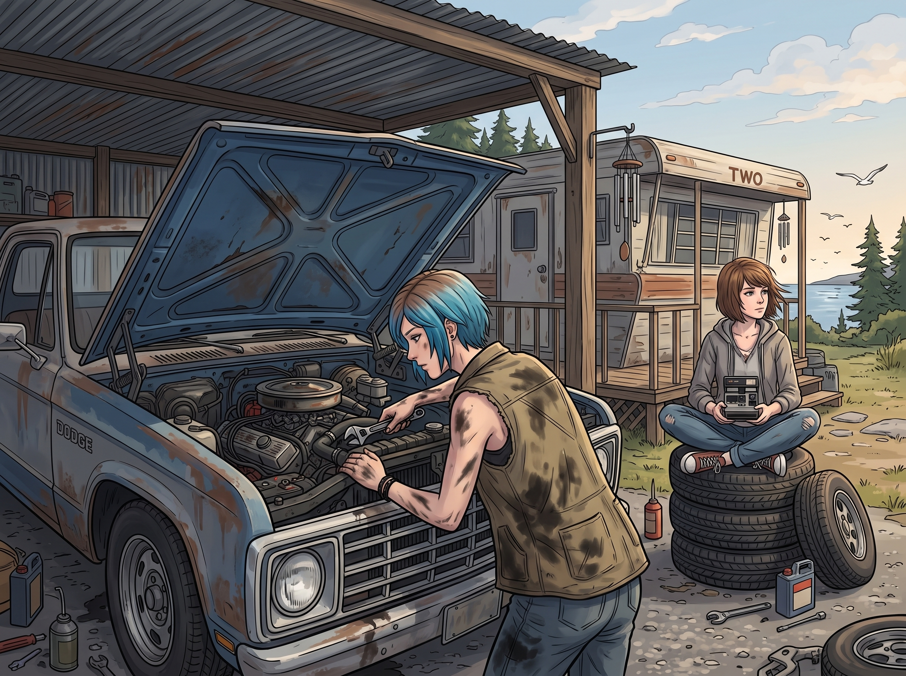

工業垃圾的朋克讚歌

華盛頓州初秋的午後，海風帶著一絲涼意，但二號車廂旁的露天皮卡維修棚裡卻熱火朝天。
老道奇皮卡的引擎蓋大開著，Chloe 穿著沾滿黑色機油的無袖工裝背心，半個身子探在水箱前面，正用活動扳手死死擰緊一根冷卻管。Max 則像隻慵懶的貓一樣，盤腿坐在旁邊疊成一摞的備用輪胎上，手裡拿著拍立得，百無聊賴地看著海鷗。
一、引擎蓋下的碳酸轟鳴
「搞定！」
Chloe 猛地從引擎蓋下鑽出來，隨手把扳手扔進工具箱，發出「哐噹」一聲巨響。她用手背抹了一把額頭上的汗，轉身走向旁邊的冰桶，從裡面精準地撈出兩罐表面掛著冰霜的黑櫻桃味汽水，順手把其中一罐扔給了 Max。
「嘶——啪！」
兩聲拉環拉開的聲音幾乎同時響起，高壓碳酸氣泡帶著一股極其濃郁、甜到發膩的工業櫻桃香精味瞬間彌漫開來。兩人幾乎是同步仰起脖子，喉結滾動，一口氣灌下了半罐紫黑色的糖漿液體。
「啊——！！」Chloe 誇張地哈出一大口氣，滿意地打了個帶著櫻桃味的響嗝，「這他媽才是工業革命的終極讚歌！高果糖漿萬歲！」
Max 也跟著哈了一口氣，語氣裡毫無心理負擔：「Victoria 如果在這裡，她一定會立刻掏出 iPad 給我們念一段關於反式脂肪酸的最新研究報告。她說這是『液體心血管炸彈』。」
二、藍領技師的高糖神學
「哈！Chase 夫人那個被冷榨羽衣甘藍汁醃透了的胃，根本承受不住真正的美國靈魂！」
Chloe 一屁股坐在保險桿上，晃著手裡深紅色的鋁罐，開啟了她的藍領街頭演講：「聽著，Maxine。這個國家的洲際公路、摩天大樓，還有這台能在泥地裡狂飆的柴油發動機，妳以為是靠那些該死的有機藜麥沙拉建起來的嗎？錯！是靠紅色 40 號色素、防腐劑、特辣牛肉乾，還有這種一口下去能讓牙齒瞬間溶解的櫻桃汽水！這是卡車司機的靈魂燃料！是我們這種在車底下吃灰的機械師的神聖血脈！」
三、攝影師的精準吐槽與心照不宣
Max 一邊喝著汽水，一邊配合地翻了個巨大的白眼，語氣裡帶著早已習慣的縱容：「Chloe，妳清醒一點。妳手裡那罐東西，從配料表的排版到工廠流水線，這輩子都沒有和一顆真正的櫻桃待在同一個房間裡過。那味道完全是上世紀某個沒睡醒的化學家，用石油副產品調配出來的幻覺。」
「這才是最屌的地方啊！」Chloe 瞪大眼睛，理直氣壯地反駁，「上帝創造了櫻桃，但人類用化工廠超越了上帝！這種粗暴、直接、毫不掩飾的假櫻桃味，才有一種不顧一切的朋克精神！懂不懂啊，藝術家？」
Max 盯著手舞足蹈的藍髮女孩看了三秒，無奈地笑了笑，隨後拉開了自己隨身的帆布相機包。她沒有拿出底片，而是從裡面掏出了一袋早就準備好的、包裝刺眼的螢光橘色起司條，以及兩根幾乎全是色素的酸味小熊軟糖。
「所以我才隨身備了貨。」Max 撕開起司條的包裝，拿出一根沾滿螢光橘色粉末的零食塞進嘴裡，發出「咔嚓」一聲脆響，「反正我們倆都心知肚明這是垃圾，只是誰都不想承認自己有多愛吃而已。」
四、名媛的陰影與最終共識
Chloe 愣了一下，隨即爆發出震天動地的狂笑。
她順手從 Max 那袋起司條裡也抓了一大把塞進嘴裡：「哈哈哈哈！算妳誠實！沒有人能拒絕垃圾食品的統治！哪怕是我們高貴的獨立攝影師，骨子裡也是個癮君子！」
兩人並排坐在皮卡的保險桿上，一口高糖分的櫻桃汽水，一口劣質咸香的起司條。海風吹拂著維修棚，海鷗在頭頂盤旋。
「我們最好在 Victoria 拿著她的義大利黑醋和有機小番茄出來巡視之前把這些吃完。」Max 喝完一大口汽水，感覺大腦皮層被糖分刺激得一陣酥麻。
「同意。」Chloe 嚼著起司條，含糊不清地說，「不然她一定會用那把長柄雨傘把我們倆的頭敲進這台發動機的氣缸裡。」
在這個充滿機油味與海風的午後，沒有高級餐廳的拘束，沒有卡路里的焦慮，只有極致的糖分與色素，構建了這對最佳搭檔最純粹、最放肆的快樂。